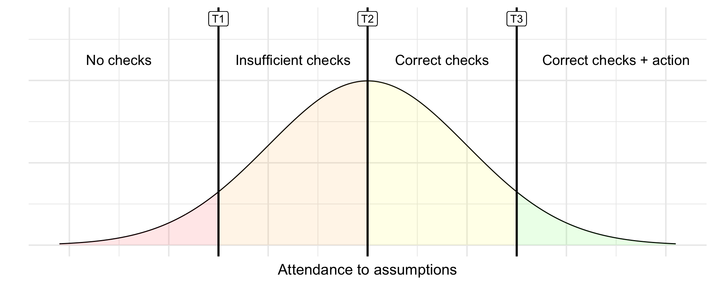
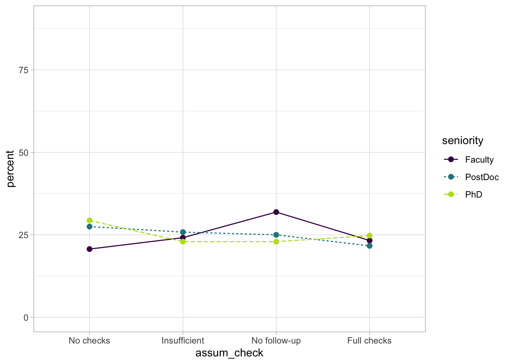
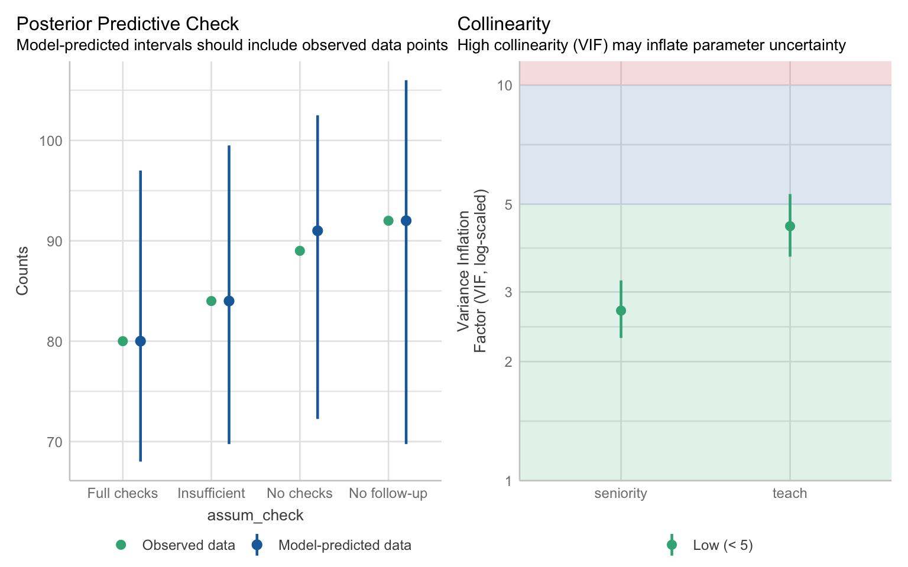
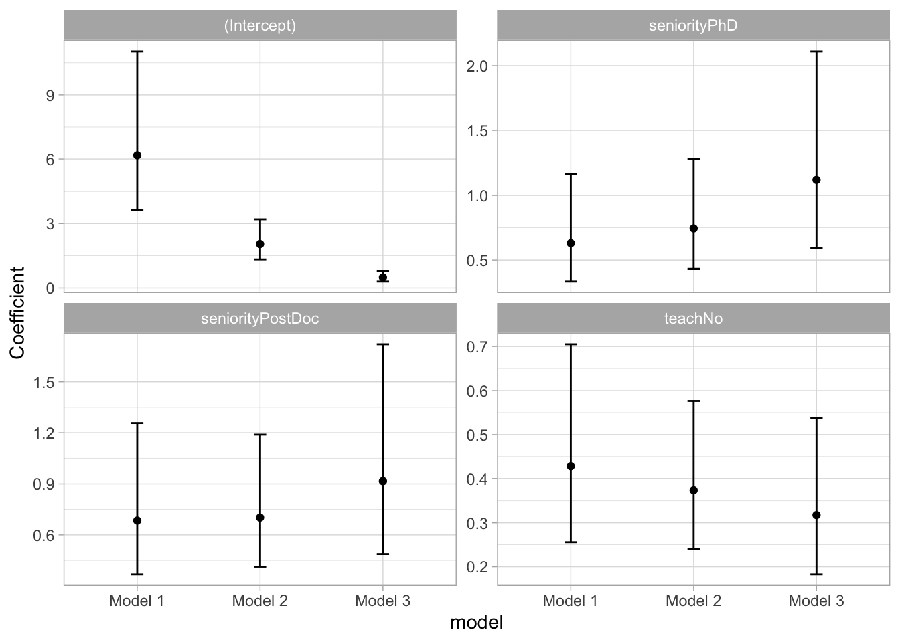

3 Modelling ordinal outcomes
Please use the scale below to indicate your agreement/disagreement with the following statement:
“9 am classes during the winter months are always the highlight of my week.”
- Strongly agree
- Agree
- Neither agree nor disagree
- Disagree
- Strongly disagree
Likert scales, like the one above, are extremely common in psychology. Majority of scales measuring psychological constructs - such as depression, anxiety, well-being or life satisfaction - comprise multiple of Likert scale items. Items within a scale are usually summed or averaged to get a final score - this way we usually end up with a continuous variable which we can model with a GLM or with a Gamma GzLM.1
However, there are situations when we’re measuring a response with a single question, like the one in the example above. Although it might be tempting to treat it as continuous, doing so could be misleading. Unit change in the outcome needs to represent the same magnitude of change regardless of where on the scale we are positioned. A temperature change from 12°C to 13°C is mathematically the same as the change from 35°C to 36°C, and the interpretation of the parameter estimates relies on it. Can we say the same thing about Likert scales? Is the change from Strongly agree to Agree the same magnitude as the change from Agree to Neither agree not disagree? Does the value 3.4 make sense? What does would it even represent?
Although we often associate Likert scales with numeric values (e.g. 1-5), they are closer to categorical outcomes than to continuous outcomes - this will become obvious when we start interpreting the output. A more general name for these outcomes is Ordinal Outcomes or Ordered Factors - categorical variables with levels that have some meaningful order.
3.1 Types of Ordinal Models
We have three classes of ordinal models which are useful in different situations depending what kind of probability we’re trying to model and what sort of question we want to answer.
Cumulative models (or Proportional Odds Models) allow us to estimate the odds of the outcome being at a given level or lower against the odds of being at any remaining higher level.
Sequential models estimate the odds of the outcome being at the given level against the odds of being at any remaining higher level.
Adjacent-category models estimate the odds of the outcome being at a given level against the odds of being at the next higher level.
If it helps, you can think of them as different types of contrasts that allow us to make various comparison across levels. We often use simple dummy coding in these tutorials, but if we have a specific hypothesis about how levels might differ, we could apply custom contrasts.
In this tutorial, we’re going to focus on the Cumulative Models because (a) they are the most commonly used and (b) their interpretation is the closest to what we’d expect from the previous models we’ve covered.2 If you fancy a technical read, Bürkner and Vuorre (2019) explains the alternative models in more detail.
All in all, ordinal models are a bit of a doozy. Let’s jump straight into a scenario so we can introduce the necessary concepts with some practical context.
3.2 Scenario
This scenario is loosely based on research we carried out a couple if years ago (Sladekova, Poupa, and Field 2024). The data are simulated.
A team of meta-researchers wants know whether psychology researchers attend to the assumptions of the General Linear Model. They send out a survey asking researchers to complete a brief analysis exercise and upload their finished analytic scripts. The meta-researchers then go over the submitted surveys and code participants’ practice (
assum_check) into the following categories
- No assumption checks performed
- Superficial or insufficient checks performed
- Correct checks performed but no corrective follow-up action
- Correct checks performed as well as a corrective follow-up action.
As predictors, they record the researchers’ seniority (
seniority) and whether or not they teach statistics and research methods as part of their job (teach), hypothesising the following:
H1: Senior researchers will attend to the GLM assumptions to a greater extent compared to junior researchers.
H2: Researchers who teach research methods and statistics will attend to GLM assumptions to a greater extent compared to those who do not teach.
3.3 Cumulative ordinal models
One of the core principles of ordinal models is the assumption that there is underlying latent continuous variable. Each of our levels will cover a certain range within this variable, and the levels are differentiated by thresholds.
In our example, we’re assuming there is some latent variable that represents the attendance to assumptions. This is illustrated in Figure 3.1 . We have low attendance to assumptions on the left end, and high attendance on the right end. The vertical lines represent the thresholds between the levels (T1, T2, T3). We will always have one fewer thresholds than we have levels. In our case, we have four levels, therefore we need three thresholds in order to split the latent variable into four categories.
The thresholds
The way this latent variable is created under the hood is by applying a link function. The most commonly used link function with cumulative models is logit.
In a model with no predictors, we’re only estimating the position of the thresholds - if we were to move them left or right, the area under the curve for each level would change, and so would the probability of the outcome being from given level. The thresholds therefore represent the intercepts of the model. That’s right - cumulative models have multiple intercepts! Very exciting.
Specifically, we’re estimating:
- Odds of doing no checks VS odds of doing any checks (including a corrective action).
- Odds of doing no checks or insufficient checks VS odds of doing correct checks (including corrective action).
- Odds of doing no checks or any checks without action VS odds of doing correct checks with corrective action.
When we add predictors, we’re estimating how these thresholds change in association with each predictor. A very neat thing is that even though we have all of these thresholds that need estimating, we’re only going to estimate one parameter for each predictor and assume that the way the odds outlined change is the same. We call this the proportional odds assumption - we’ll return to it in due course.
Packages
Only familiar faces today - tidyverse, easystats and once again we’re summoning the MASS package which will help us fit ordinal models.
library(tidyverse)
library(easystats)
library(MASS)The data
The data are stored in the file assumption_data.csv. Download the data and import it to Posit Cloud. Once you’ve done so, you can read the data into R by running:
assum_tib <- here::here("data/assumption_data.csv") |> readr::read_csv()We’re going to be very deliberate with our levels this time - we need to tell R that our outcome is an ordered factor.
We also want to ensure the levels of our predictors are in the right order - our hypotheses make predictions about more senior researchers (H1) and researchers who teach stats (H2) so these are the levels we’ll set as the baseline.
assum_tib <- assum_tib |>
1 dplyr::mutate(
2 assum_check = factor(
assum_check,
3 levels = c("No checks", "Insufficient", "No follow-up", "Full checks"),
4 ordered = TRUE
),
5 seniority = factor(seniority, levels = c("Faculty", "PostDoc", "PhD")),
6 teach = factor(teach, levels = c("Yes", "No"))
)- 1
-
Use the
mutate()function to modify variables. - 2
-
Use the
factor()function to convertassum_checkinto a factor. - 3
- List the levels in the right order.
- 4
- Specify that the levels of this factor have a meaningful order.
- 5
-
Convert
seniorityinto a factor, with “Faculty” as the baseline. - 6
-
Convert
teachinto a factor, with “Yes” as the baseline.
3.4 Descriptives
We’re going to do something different here. All of our variables are categorical, so it makes little sense to calculate means, SDs and skewness (we could still run describe_distribution() if we had any continuous predictors though). Instead, we’re going to look at counts and relative percentages.
We’ll start with the teaching predictor. We want to know:
(1) How many researchers completed different levels of assumption checking within each teaching category.
(2) What percentage this represent within each teaching category.
assum_desc_teach <- assum_tib |>
1 dplyr::count(teach, assum_check) |>
2 dplyr::mutate(
3 percent = n/sum(n)*100,
4 .by = teach
)
assum_desc_teach |>
display()- 1
-
Use the
count()function to count cases within combinations of teaching levels and assumption checking levels. - 2
-
Use the
mutate()function to calculate a new variable - 3
- Calculate the percentage by dividing the count by the number of cases and multiplying by 100.
- 4
-
Split the calculation above by the
teachvariable. This way the percentage calculation will be completed for teachers and non-teachers separately.
| teach | assum_check | n | percent |
|---|---|---|---|
| Yes | No checks | 30 | 17.75 |
| Yes | Insufficient | 34 | 20.12 |
| Yes | No follow-up | 49 | 28.99 |
| Yes | Full checks | 56 | 33.14 |
| No | No checks | 59 | 33.52 |
| No | Insufficient | 50 | 28.41 |
| No | No follow-up | 43 | 24.43 |
| No | Full checks | 24 | 13.64 |
We can do the same for the seniority variable:
assum_desc_seniority <- assum_tib |>
dplyr::count(seniority, assum_check) |>
dplyr::mutate(
percent = n/sum(n)*100,
.by = seniority
)
assum_desc_seniority |>
display()| seniority | assum_check | n | percent |
|---|---|---|---|
| Faculty | No checks | 24 | 20.69 |
| Faculty | Insufficient | 28 | 24.14 |
| Faculty | No follow-up | 37 | 31.90 |
| Faculty | Full checks | 27 | 23.28 |
| PostDoc | No checks | 33 | 27.50 |
| PostDoc | Insufficient | 31 | 25.83 |
| PostDoc | No follow-up | 30 | 25.00 |
| PostDoc | Full checks | 26 | 21.67 |
| PhD | No checks | 32 | 29.36 |
| PhD | Insufficient | 25 | 22.94 |
| PhD | No follow-up | 25 | 22.94 |
| PhD | Full checks | 27 | 24.77 |
Calculating the percentage in this way allows us to make relative comparisons, even if the group sizes are not exactly equal. For example, we can see that 20.69% of the Faculty-level researchers completed no checks at all, however this was lower than the proportion of PostDocs in this category (27.50%) or the PhDs (29.36%)3 . Conversely, 23.28% if faculty ran full checks (including corrective action), compared to 21.67% of PostDocs and 24.77% of PhDs. Admittedly, it can be difficult to see any patterns in a table like this, so we might wish to visualise these percentages instead.
3.5 Visualise the data
Notice that when created the summary tables above, we also saved them into a separate objects, assum_desc_teach and assum_desc_seniority . These will come in handy here.
For teaching:
1ggplot2::ggplot(data = assum_desc_teach,
2 aes(x = assum_check, y = percent,
3 colour = teach, linetype = teach, group = teach)) +
4 geom_point(size = 2) +
5 geom_line() +
6 scale_colour_viridis_d(end = 0.9) +
7 coord_cartesian(ylim = c(0, 100)) +
theme_light()- 1
- Used the summary that we created in the previous step.
- 2
-
assum_checkgoes on the x axis,percentgoes on the y axis. - 3
-
We’re going to create separate lines for each level of
teach- we want them to be differentiated by colour and linetype. We’re also adding thegroupargument, which helps ggplot connect the lines correctly. - 4
- Add points. Optionally change their sizes.
- 5
- Add the lines.
- 6
-
Change the colours to something more accessible. Here we’re using the viridis colour scheme, which is a delight to look at. Viridis goes from light yellow to dark purple. Yellow can be difficult to see on a light background - we’re setting the
endargument to 0.9 (1 would go all the way to yellow), so the colour on the lower end stays slighly darker green. - 7
- We’re working with percentages, so the y axis should go from 0 to 100.

For seniority:
ggplot2::ggplot(data = assum_desc_seniority,
aes(x = assum_check, y = percent,
colour = seniority, linetype = seniority, group = seniority)) +
geom_point(size = 2) +
geom_line() +
scale_colour_viridis_d(end = 0.9) +
coord_cartesian(ylim = c(0, 90)) +
theme_light()
3.6 Fit the model
We’ll use the polr function (which stands for Proportional Odds Linear Regression) from the MASS package to fit our model. All we need is the formula and the data:
assum_ord <- MASS::polr(assum_check ~ seniority + teach, data = assum_tib) 3.7 Check model fit
Let’s start with the easystats approach:
check_model(assum_ord)
The posterior predictive check looks pretty good - there’s a lot of uncertainty in the prediction but on average it aligns with our data. No problems with collinearity.
Proportional Odds Assumption
Recall that our model estimates the following:
- Odds of doing no checks VS odds of doing any checks (including a corrective action).
- Odds of doing no checks or insufficient checks VS odds of doing correct checks (including corrective action).
- Odds of doing no checks or any checks without action VS odds of doing correct checks with corrective action.
It will also estimate how these odds change with our predictors. The model assumes that regardless of which threshold (T1, T2 or T3) we’re referring to, the effect of the predictor will be the same.
Apparently, there are formal tests and no doubt functions that can give us a simple yes/no answer as to whether the assumption is upheld. But formal tests are the huckster’s crutch and we’re no hucksters. We’re going to take the slow road, which will help us understand the assumption better.
Notice that each item of the list above compares two odds. We can think of them three separate logistic models where the outcome has two categories. So here’s what we’re going to do:
- Recode the outcome into three variables, where each has only two levels.
- Fit a logistic model to each of these outcomes.
Recoding the outcome
The first logistic model compares the odds of doing no checks at all (level 1) against all other levels. We can recode outcomes using the case_when() function from dplyr. We’ll start with one variable so you get a sense of how it works, and then we’ll show the full code:
assum_tib <- assum_tib |>
1 dplyr::mutate(
2 level_1_vs_levels_234 = dplyr::case_when(
3 assum_check %in% c("No checks") ~ 0,
4 assum_check %in% c("Insufficient", "No follow-up", "Full checks") ~ 1
)
)- 1
-
Use the
mutate()function to create a new variable. - 2
-
We’re calling this new variable
level_1_vs_levels_234to indicate which levels we’re comparing (you can call it anything as long as it makes sense to you). The way to create this new variable is to use the functioncase_when(). - 3
-
For cases when
assum_checkhas the value “No checks”, assign (~)the value 0. - 4
-
For cases when
assum_checkhas the value “Insufficient” or “No follow-up” or “Full checks”, assign the value 1.
If you inspect the tibble, you’ll see that there’s now a new column at the end titled level_1_vs_levels_234 . We could have assign any two values here, but 0 and 1 are simple enough - we just need to remember that 0 represents worse checks and 1 represents better checks.
We can do all the recoding in just one chunk:
assum_tib <- assum_tib |>
dplyr::mutate(
level_1_vs_levels_234 = dplyr::case_when(
assum_check %in% c("No checks") ~ 0,
assum_check %in% c("Insufficient", "No follow-up", "Full checks") ~ 1
),
levels_12_vs_levels_34 = dplyr::case_when(
assum_check %in% c("No checks", "Insufficient") ~ 0,
assum_check %in% c("No follow-up", "Full checks") ~ 1
),
levels_123_vs_level_4 = dplyr::case_when(
assum_check %in% c("No checks", "Insufficient", "No follow-up") ~ 0,
assum_check %in% c("Full checks") ~ 1
)
)Fitting the logistic models
Now we’re ready to fit our three models. A reminder that when we fit logistic models, we do so with the glm() function. The family we need for binary outcomes is “binomial”. We keep the same formula as before, but we use the new recoded variables as the outcomes.
model_log_1 <- glm(level_1_vs_levels_234 ~ seniority + teach, data = assum_tib)
model_log_2 <- glm(levels_12_vs_levels_34 ~ seniority + teach, data = assum_tib)
model_log_3 <- glm(levels_123_vs_level_4 ~ seniority + teach, data = assum_tib)Nice and easy. Next we summon the compare_models() function from easystats. This function will extract the parameter estimates and confidence from all three models, exponentiate them, and present them next to each other so we compare them. Nice and neat.
compare_models(model_log_1, model_log_2, model_log_3, exponentiate = TRUE) |>
display(digits = 3)| Parameter | model_log_1 | model_log_2 | model_log_3 |
|---|---|---|---|
| (Intercept) | 2.390 (2.182, 2.618) | 1.957 (1.766, 2.169) | 1.392 (1.275, 1.518) |
| seniority (PostDoc) | 0.935 (0.838, 1.045) | 0.920 (0.812, 1.042) | 0.986 (0.887, 1.096) |
| seniority (PhD) | 0.920 (0.822, 1.031) | 0.933 (0.821, 1.060) | 1.020 (0.915, 1.136) |
| teach (No) | 0.855 (0.780, 0.937) | 0.787 (0.710, 0.872) | 0.823 (0.754, 0.898) |
| Observations | 345 | 345 | 345 |
First thing to note - the intercepts are very different from each other. That’s okay and expected - remember, the intercepts represent the thresholds, which naturally have different positions (Figure 3.1). The values that we’re interested in are the parameter estimates for the predictors, which tell us how the thresholds change. Let’s go row by row:
seniority (PostDoc) - all estimates are in the 0.9 range. All confidence intervals also overlap with 1, meaning that that there might be no difference between PostDocs and Faculty (our baseline).
seniority (PhD) - similar as above, all estimates 0.9 and confidence intervals overlap.
teach (No) - For this effect, all estimates are around 0.8, indicating that the odds of “better practice” are lower for individuals who don’t teach stats. Again, confidence intervals overlap with each other, and none of them cross 1 so the estimation is consistent.
Visualising the proportional odds assumption (optional)
This is an optional section showing how we can visualise the parameter estimates to compare them model easily. First, we’re going to scale back to the model_parameters() function and extract each set of estimates separately. We’re store these into a table, and then we’ll use that table with ggplot.
params_1 <- model_parameters(model_log_1, exponentiate = TRUE) |>
1 dplyr::mutate(model = "Model 1")
params_2 <- model_parameters(model_log_2, exponentiate = TRUE) |>
2 dplyr::mutate(model = "Model 2")
params_3 <- model_parameters(model_log_3, exponentiate = TRUE) |>
3 dplyr::mutate(model = "Model 3")
4prop_odds_tbl <- rbind(params_1, params_2, params_3) |>
5 as.data.frame()- 1
- Extract the first set of estimates. Modify this table to have a new column called “model”. This column will indicate which model our estimates come from.
- 2
-
Extract estimates for the second model and add the
modelcolumn. - 3
-
Extract estimates for the third model and add the
modelcolumn. - 4
-
Use the
rbind()function to bind the estimates from all three models into a single table. Store the result into an object calledprop_odds_tbl. - 5
- Convert into a data frame so it’s easier to work with in ggplot.
Now let’s create our plot.
1prop_odds_tbl |>
ggplot2::ggplot(data = _, aes(x = model, y = Coefficient,
2 ymin = CI_low, ymax = CI_high)) +
3 geom_point() +
4 geom_errorbar(width = 0.1) +
5 facet_wrap(~Parameter, scales = "free_y") +
theme_light()- 1
- Use the table we’ve just created as the dataset.
- 2
-
The
modelvariable should be in the x axis so that we have estimates from different models next to each other. The y axis should have the Coefficient value, and we’re also specifyingyminandymaxso the error bars represent the confidence intervals. - 3
- Add points.
- 4
- Add the error bar. Optionally, set the width to be 0.1 so the plot looks nicer.
- 5
-
Add facet wrap so that we get a separate plot for each parameter. The
scales = "free_y"ensures that the y axis adapts depending on the effect, instead of being fixed at the same values for all effects.

Lovely! This makes it a little easier to judge how similar or different the estimates are. The plots underpin our conclusion from above - even though the point estimates are a little different at times, the intervals overlap substantially.
Based on this, we can conclude that the effects are equivalent across the thresholds, and therefore the proportional odds assumption has been satisfied. What sort of different would we have to find in order to violate the assumption? There’s no specified cut-off value and it’s an answer that requires our knowledge as a researcher, not as a statistician. Considering the kind of outcome that we’re measuring, what sort of difference would meaningfully change our interpretation and conclusion? It’s not a straightforward answer, especially given that, as a field, we’re generally very obsessed with p-values and binary answers. If you find odds ratios unintuitive to think about, you can always generate some predictions and see whether they change across the models. You can give this a go if you wish, but I feel like we’ve spent enough time on a single assumption. Moving on!
Fit statistics
Let’s get back to our model, shall we? We extract the fit statistics as usual:
model_performance(assum_ord) |>
display(digits = 3)Can't calculate log-loss.| AIC | AICc | BIC | Nagelkerke’s R2 | RMSE | Sigma |
|---|---|---|---|---|---|
| 940.9 | 941.1 | 964.0 | 0.079 | 2.485 | 1.648 |
test_wald(assum_ord)|>
display(digits = 3)| Name | Model | df | df_diff | Chi2 | p |
|---|---|---|---|---|---|
| Null model | polr | 3 | |||
| Full model | polr | 6 | 3 | 26.66 | < .001 |
The model explains 7.9% of total deviance. If you run the Wald test in your own R session, you will get a message informing you that this test is inappropriate for models with categorical predictors, so the function provides the Likelihood Ratio Test using the \(\chi^2\) statistic instead. This is okay, we just need to remember to report it as such (instead of reporting the F statistic).
3.8 Extract model parameters
Time to get our parameters and try tointerpret them:
model_parameters(assum_ord, exponentiate = TRUE) |>
1 knitr::kable(digits = 3)- 1
-
The
display()function seems to struggle to organise the output sensibly, so we’ll just use thiskable()(which is less intuitively named but works a treat).
code
code Re-fitting to get Hessian| Parameter | Coefficient | SE | CI | CI_low | CI_high | t | df_error | p | Component |
|---|---|---|---|---|---|---|---|---|---|
| No checks|Insufficient | 0.167 | 0.037 | 0.95 | 0.108 | 0.258 | -8.055 | 339 | 0.000 | alpha |
| Insufficient|No follow-up | 0.512 | 0.104 | 0.95 | 0.344 | 0.763 | -3.305 | 339 | 0.001 | alpha |
| No follow-up|Full checks | 1.813 | 0.368 | 0.95 | 1.216 | 2.703 | 2.931 | 339 | 0.004 | alpha |
| seniorityPostDoc | 0.777 | 0.181 | 0.95 | 0.492 | 1.225 | -1.085 | 339 | 0.279 | beta |
| seniorityPhD | 0.789 | 0.192 | 0.95 | 0.490 | 1.270 | -0.974 | 339 | 0.331 | beta |
| teachNo | 0.373 | 0.074 | 0.95 | 0.252 | 0.551 | -4.944 | 339 | 0.000 | beta |
Thresholds (intercepts)
The first three rows refer to the threshold estimates. They’re labelled as “alpha” in the Component column at the end. The coefficients represent the values of the thresholds when all the predictors are the the baseline, which would be the “Faculty” level for seniority and “Yes” for teaching. For these individuals:
No checks|Insufficient: The odds of doing no checks are lower by a factor of 0.167 compared to the odds of doing any checks at all.
Insufficient|No follow-up: The odds of doing no checks or insufficient checks are lower by a factor of 0.512 compared to the odds of doing correct checks or correct checks with a follow-up action.
No follow-up|Full checks: The odds of doing no checks, insufficient checks, or correct checks are higher by a factor of 1.813 compared to the odds of doing correct checks with a follow-up action.
All of this makes sense - the last comparison might seen a little un-intuitive at first because (at least based on our hypothesis) the baseline categories are meant to be “the best of the best”, but think back to Figure 3.1 - We’re comparing the mass before T3 against the mass after it, so the odds are almost always going to be higher for this threshold.
We will unpick these in a painstaking detail in just a moment, but for now, let’s move on to the parameter estimates.
Parameter estimates
The parameter estimates are tagged with the “beta” label under the Component column. These estimates tell us how the thresholds change. Because of the proportional odds assumption, we’re assuming an equivalent change for each threshold. As a reminder, values below 1 indicate a negative relationship between variables, values above indicate a positive relationships, and 1 indicates no relationship.
seniorityPostDoc: Compared to the Faculty, the PostDocs had lower odds of having their assumption checks categorised in the higher levels, by a factor of 0.777. This difference was not statistically significant. If you find positive odds ratios easier to think about, we can reverse the calculation as 1/0.777 = 1.287. This value can be interpreted in two ways (1) the Faculty odds of faculty performing checks in the higher levels were 1.287 times higher compared to the odds of PostDocs or (2) The PostDocs were 1.287 more likely to perform checks in the lower levels (or perform no checks at all). Both are mathematically valid.
seniorityPhD: Compared to the Faculty, PhD researchers had lower odds of performing higher level checks by a factor of 0.789. Alternatively, the Faculty were 1/0.789 = 1.267 times more likely to performed higher level checks compared to PhDs. This difference was not statistically significant. The confidence intervals for this effect as well as the previous one contain the value 1, suggesting that no difference in assumption checking is plausible.
teachNo: Compared to statistics instructors, the odds of performing higher level checks were lower for those who don’t teach by a factor of 0.373. Conversely, the odds of performing higher level checks were 2.681 times higher (1/0.373) for those who do teach statistics. This effect was statistically significant. The confidence intervals indicated that this increase in odds could be as large as 3.968 (1/0.252) or as low as 1.815 (1/0.551), assuming our confidence is one of the 95% containing the true population parameter.
As interpretations go, this is understandable enough. However, the origin of these odds rations is still a little mysterious so we’re going to dig a little deeper. What we’re often interested in with these models is the probability of performing certain level of checks at different levels of the predictors, but it’s difficult to intuit this just from the output above.
3.9 Unpicking the odds
We can use the emmeans package to request the predicted probabilities for each category. The function we’ll use streamlines the predict() function and generates predictions across different levels of a predictor, while holding other predictors constant.
1assum_emm <- emmeans::emmeans(
2 assum_ord,
3 specs = "assum_check",
4 by = "teach",
5 at = list(seniority = "Faculty"),
6 mode = "prob"
)- 1
-
Use the
emmeans()function from theemmeanspackage. We’ll be storing the result of this function into an object calledassum_emm. - 2
- Specify the model.
- 3
-
We want to make predictions for different levels of assumption checks, so we specify
assum_checkin thespecsargument. - 4
- Split the prediction for different teaching and non-teaching participants.
- 5
- Specify where to hold the remaining predictors constant. We can add multiple variables here if we need to, so we need to wrap them in the list() function. We’ll hold seniority at the “Faculty” level because that’s our baseline.
- 6
-
The
modeargument ensures that the resulting predictions are converted into probabilities.
code
code Re-fitting to get Hessianassum_emm |>
knitr::kable(digits=3)| assum_check | teach | prob | SE | df | asymp.LCL | asymp.UCL |
|---|---|---|---|---|---|---|
| 1 | Yes | 0.143 | 0.027 | Inf | 0.089 | 0.196 |
| 2 | Yes | 0.196 | 0.026 | Inf | 0.145 | 0.246 |
| 3 | Yes | 0.306 | 0.027 | Inf | 0.253 | 0.359 |
| 4 | Yes | 0.355 | 0.047 | Inf | 0.264 | 0.447 |
| 1 | No | 0.309 | 0.043 | Inf | 0.223 | 0.394 |
| 2 | No | 0.270 | 0.026 | Inf | 0.219 | 0.321 |
| 3 | No | 0.251 | 0.028 | Inf | 0.196 | 0.306 |
| 4 | No | 0.171 | 0.031 | Inf | 0.111 | 0.231 |
First, let’s just visualise these so we can spot the patterns better:
assum_emm |>
1 as.data.frame() |>
ggplot2::ggplot(data = _, aes(x = assum_check,
2 y = prob, ymin = asymp.LCL, ymax = asymp.UCL,
3 linetype = teach, group = teach)) +
4 geom_point(size = 2) +
5 geom_errorbar(width = 0.1) +
6 geom_line() +
7 coord_cartesian(ylim = c(0, 1)) +
theme_light()- 1
- Convert the emm object into a dataframe otherwise ggplot will request to speak to our manager.
- 2
- Place prob on the y axis, and the confidence intervals (asymp.LCL and asymp.UCL) on ymin and ymax. This will be useful for errorbars.
- 3
- Differentiate the teach variable by linetype.
- 4
- Add the points.
- 5
- Add the error bars. Optionally, change width to make the plot nicer.
- 6
- Add the lines.
- 7
- Change the co-ordinates to be between 0 and 1 (because we’re working with probabilities, not percentages).

That’s a lovely and clear plot. You might be thinking that it looks very similar to Figure 3.2, and you’d be right. The main difference is that Figure 3.2 shows percentages based on raw counts, while this figure is based on the model prediction while also accounting for the other predictors in the model AND it gives us nice error bars. In a report, you wouldn’t include both. I’d probably only include the descriptive tables (because they contain the same info as Figure 3.2), and then include the model-predicted probabilities to help with the interpretation of the results.
Now that I’ve lulled you into a false sense of security with a plot, let’s do some maths. We want to understand how our probabilities in the figure above and in Table 3.2 relate to the parameter estimates in Table 3.1 .
A reminder that odds are calculated as the ratio of a probability of some value Y occurring vs the inverse of that probability. For example, we could calculate the odds the first level of outcome (“No checks”) as:
\[ Odds(Y=1) = \frac{P(Y=1)}{1 - P(Y=1)} \]
Odds Ratio is ratio of odds. We calculate the odds of different levels and then calculate their ratio. Let’s say that Y = 2|3|4 represents a situation where the outcome is either the second, third, or fourth level. The odds are calculated as:
\[ Odds(Y=2|3|4) = \frac{P(Y=2|3|4)}{1 - P(Y=2|3|4)} \]
Then the odds ratio of the the first level against the other three levels is:
\[ OR_{(\mbox{1 vs 2|3|4})} = \frac{Odds(Y=1)}{Odds(Y=2|3|4)} \]
Calculating the thresholds
Let’s work with the values from Table 3.2 . For now, focusing on the “Yes” category for teaching:
Probability of No checks (
assum_checkis 1): 0.143Probability of any checks at all (
assum_checkis 2 or 3 or 4): 0.196 + 0.306 + 0.355 = 0.857Odds (1 vs 2|3|4) = 0.143 / 0.857 = 0.167. This is the same value as the threshold No checks|Insufficient from Table 3.1
Let’s try to work out the the second threshold:
Probability that
assum_checkis 1 or 2: 0.143 + 0.196 = 0.339Probability that
assum_checkis 3 or 4: 0.306 + 0.355 = 0.661Odds (1|2 vs 3|4) = 0.339 / 0.661 = 0.152. This is the same value as the threshold Insufficient|No follow-up from Table 3.1
Finally, the last threshold:
Probability that
assum_checkis 1 or 2 or 3: 0.143 + 0.196 + 0.306 = 0.645Probability that
assum_checkis 4: 0.355Odds (1|2 vs 3|4) = 0.645 / 0.355 = 1.816. This is the same value as the threshold No follow-up|Full checks from Table 3.1 (allowing for minor rounding variation)
Calculating the parameter estimates
We’re just going to stick with the teach variable here to keep things simple.
Threshold 1 - No checks|Insufficient:
Odds (1 vs 2|3|4) for those who teach = 0.167(we worked this out above)
Odds (1 vs 2|3|4) for those who do not teach = 0.309 / (0.270 + 0.251 + 0.171) = 0.446 (we’re taking these probabilities from Table 3.2)
Odds Ratio for teachNo: 0.167 / 0.446 = 0.374 which is the same as the Coefficient from Table 3.1 .
Threshold 2 - Insufficient|No follow-up:
Odds (1|2 vs 3|4) for those who teach = 0.512
Odds (1|2 vs 3|4) for those who do not teach = (0.309 + 0.270) / (0.251 + 0.171) = 1.372
Odds Ratio for teachNo: 0.512 / 1.372 = 0.374 which, again, is the same as the Coefficient from Table 3.1 .
Threshold 3 - No follow-up|Full checks:
Odds (1|2|3 vs 4) for those who teach = 1.813
Odds (1|2|4 vs 4) for those who do not teach = (0.309 + 0.270 + 0.251) / 0.171 = 4.853
Odds Ratio for teachNo: 1.813 / 4.853 = 0.374 same as above and Table 3.1 . These are proportional odds demonstrated in action. No matter which threshold we consider, the change in the odds for this specific predictor remains the same.
If you’ve read this far, well done. this Getting to grips with these models is not the easiest task but it’s worth having some understanding of where the values are coming from. Because if we know where values come from, we can (1) interpret them properly and (2) be able to judge when something goes wrong and the model presents us with non-sense results (3) be able to judge when someone is presenting us with non-sense results.
3.10 Report
The good news is that we don’t really need to go into an extensive detail as we did in the previous section when reporting and interpreting the results. Generally, a good middle ground is to report and interpret the odds ratios with reference to the hypotheses and then comment on estimated (predicted) probabilities generated by emmeans. Here’s an example of how we could approach this:
Threshold estimates and parameter estimates are summarised in Table 3.1 . Compared to researchers at the Faculty level, both PostDocs (OR = 0.777, 95% CI [0.492, 1.225]) and PhD researchers (OR = 0.789, 95% CI [0.490, 1.270]) had lower odds of performing higher level assumption checks. Contrary to Hypothesis 1, these differences were not statistically significant at \(\alpha\) = .05).
Researchers who didn’t teach research methods and statistics had lower odds of performing higher level assumption checks (OR = 0.373, 95% CI [0.252, 0.551]). This reduction in odds was statistically significant, p < .001. Conversely, this means the odds of performing higher level checks were 1/0.373 = 2.681 times higher for researchers who also teach statistics. This aligns with Hypothesis 2.
Figure 3.3 shows the model predicted probabilities that confirm this trend - while the probabilities for teaching and non-teaching researchers overlapped for the middle two levels, there was a clear distinction in the lowest and the highest assumption-checking level. Researchers who teach were less likely to forgo assumptions p(“No checks”) = 0.143[0.089, 0.196], compared to those who don’t teach, p(“No checks”) = 0.309[0.223, 0.394]. Opposite trend was noted for the full assumption checks with a corrective action., which were more likely to be completed by researchers who teach statistics, p(“Full checks”) = 0.355[0.264, 0.447], than by non-teaching researchers, p(“Full checks”) = 0.171[0.111, 0.231].
Note: you would of course also briefly comment on the descriptives, model checks, and fit statistics - here we’re just focusing on the novel part of parameter estimates for ordinal models.
3.11 Exercises
What does this code do?
Here’s all the code we have written in this section. Can you remember what each line of each codechunk does? Are there any codechunks that you struggle to make sense of? Make sure to revisit the section in which it is used and take notes.
assum_tib <- assum_tib |>
dplyr::mutate(
assum_check = factor(
assum_check,
levels = c("No checks", "Insufficient", "No follow-up", "Full checks"),
ordered = TRUE
),
seniority = factor(seniority, levels = c("Faculty", "PostDoc", "PhD")),
teach = factor(teach, levels = c("Yes", "No"))
)assum_desc_teach <- assum_tib |>
dplyr::count(teach, assum_check) |>
dplyr::mutate(
percent = n/sum(n)*100,
.by = teach
)
assum_desc_teach |>
display()ggplot2::ggplot(data = assum_desc_teach,
aes(x = assum_check, y = percent,
colour = teach, linetype = teach, group = teach)) +
geom_point(size = 2) +
geom_line() +
scale_colour_viridis_d(end = 0.9) +
coord_cartesian(ylim = c(0, 100)) +
theme_light()assum_ord <- MASS::polr(assum_check ~ seniority + teach, data = assum_tib) assum_tib <- assum_tib |>
dplyr::mutate(
level_1_vs_levels_234 = dplyr::case_when(
assum_check %in% c("No checks") ~ 0,
assum_check %in% c("Insufficient", "No follow-up", "Full checks") ~ 1
),
levels_12_vs_levels_34 = dplyr::case_when(
assum_check %in% c("No checks", "Insufficient") ~ 0,
assum_check %in% c("No follow-up", "Full checks") ~ 1
),
levels_123_vs_level_4 = dplyr::case_when(
assum_check %in% c("No checks", "Insufficient", "No follow-up") ~ 0,
assum_check %in% c("Full checks") ~ 1
)
)model_log_1 <- glm(level_1_vs_levels_234 ~ seniority + teach, data = assum_tib)
model_log_2 <- glm(levels_12_vs_levels_34 ~ seniority + teach, data = assum_tib)
model_log_3 <- glm(levels_123_vs_level_4 ~ seniority + teach, data = assum_tib)compare_models(model_log_1, model_log_2, model_log_3, exponentiate = TRUE) |>
display(digits = 3)model_parameters(assum_ord, exponentiate = TRUE) |>
knitr::kable(digits = 3) assum_emm <- emmeans::emmeans(
assum_ord,
specs = "assum_check",
by = "teach",
at = list(seniority = "Faculty"),
mode = "prob"
)
assum_emm |>
knitr::kable(digits=3)assum_emm |>
as.data.frame() |>
ggplot2::ggplot(data = _, aes(x = assum_check,
y = prob, ymin = asymp.LCL, ymax = asymp.UCL,
linetype = teach, group = teach)) +
geom_point(size = 2) +
geom_errorbar(width = 0.1) +
geom_line() +
coord_cartesian(ylim = c(0, 1)) +
theme_light()Worksheet
Scenario:
A local GP surgery has rolled out a new patient app and wishes to understand the users’ satisfaction with the service. The app anonymously monitors engagement and records:
- The outcome of the interaction with the app, with the options “Booked an appointment”, “Prescription request” or “Redirected to NHS information website”. [
outcome]
- Whether the patient interacted with an AI chatbot while they used the app [
ai_chatbot].When the user closes the app, they are presented with the following question:
- On the whole, how would you rate your experience with this app today? where the patients can click on “Dissatisfied”, “Neutral” and “Satisfied” [
user_satisfaction].
Use the tutorial to complete the following tasks:
Generate descriptive statistics to summarise your data.
Fit a model predicting user satisfaction from both predictors (the outcome of the interaction). Use “Redirected” as the baseline for
outcomeand “Yes” as the baseline forai_chatbot.Check the model fit, including all the assumptions and fit statistics.
Generate parameter estimates and predicted probabilities.
Write up a short report (up to 300 words) summarising and interpreting the results of your analysis.
You can use the “worksheet” file in the quarto folder to prepare the worksheet. The data are stored in the file app_data.csv. Download the data and import it to Posit Cloud. Once you’ve done so, you can read the data into R by running:
app_tib <- here::here("data/app_data.csv") |> readr::read_csv()Remember to load the necessary packages.
Optional extra task:
If you created a plot of predicted probabilities, you may have noticed that the lines and error bars overlap quite a bit, which makes it difficult to see. Can you think of a way to adjust the plot so that you can clearly see the extent to which the error bars overlap (or don’t overlap) with each other?
Check worksheet values
Once you’ve finished the worksheet, you can ask me to look through your work and give you feedback. Remember that you should also practice writing up the results in a brief report, not just running the code. If you’re stuck, you can use the quiz below to guide you.
You can also use the quiz below - if you fitted the models the correctly, your answers should match the values below.
Worksheet check
Proportional odds check:
ai_chatbotestimate for Level 1 vs 2&3: 1.118ai_chatbotestimate for Level 1&2 vs 3: 1.07outcomeBooked an appointmentestimate for Level 1 vs 2&3: 1.115outcomeBooked an appointmentestimate for Level 1&2 vs 3: 1.007
The proportional odds assumption was satisfied:
Fit statistics:
Deviance explained: 13.4 %
Likelihood ratio test statistic: 11.48
Parameter estimates:
Dissatisfied|Neutral : 0.194
Neutral|Satisfied : 58.724
outcomePrescription request: 0.749
outcomeBooked an appointment: 2.613
ai_chatbotNo estimate: 4.359
Based on the odds ratio alone (ignoring the p-value), patients who were redirected to an NHS website had higher odds of being more satisfied compared to patients who requested a prescription:
Based on the odds ratio alone, patients who were redirected to an NHS website had higher odds of being more satisfied compared to patients who booked an appointment:
Based on the odds ratio alone, patients who interacted with an AI chatbot had higher odds of being more satisfied compared to patients did not interact with the chatbot.
Estimated probabilities
Probability of “Neutral” satisfaction when interacting with the chatbot (holding
outcomeat the baseline): 0.888Probability of “Neutral” satisfaction when requesting prescription (holding
ai_chatbotat the baseline): 0.781
We’ll learn whether summing/averaging Likert scales like this is a good idea in the first place in Weeks 7, 8 and 9. Or we won’t - I’m not the one running the sessions, so it’ll be a surprise.↩︎
It’s not close by any means. But it is the closest.↩︎
No dig intended at PostDocs or PhDs. In the study cited above, we found differences in this general direction, but the overlap of uncertainty intervals was massive. Generally, the only group that tended to perform better where stats instructors.↩︎